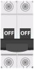
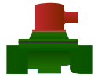
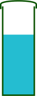

Tablero de Control
DIDÁCTICO

Parada de
emergencia
emergencia
Manual
Modo Manual
OFF
Modo Apagado
Automatico
Modo Automático
Selector de Modo de Operación
Encendido
Fallo de aire
Sobrecarga
Luz de Fallo de Aire
Luz de Sobrecarga
Apagado
Control de proceso
bloqueado
bloqueado
Válvula solenoide
Luz de Control de Proceso Bloqueado
Luz de Válvula Solenoide

Breaker de Control 1

Breaker Principal de Control


Protector de Voltaje


Relé 1
Relé 2
Contactor

Relé Térmico
Módulo de caudal de lazo cerrado
Controlador
Controlador Electrónico
 Breaker de Control 2
Breaker de Control 2
Fuente de Poder de 30 V
Proceso
 Bomba Centrífuga
Bomba Centrífuga

Válvula Solenoide

 Válvula de Control
Válvula de Control

Tanque
Placa Orificio
Tubo Venturi
 Rotámetro
Rotámetro
 Presostato
Presostato
Convertidor I/P
Interruptor de Emergencia


Interruptor de Emergencia
Haga clic en un dispositivo del proceso para aprender más de él